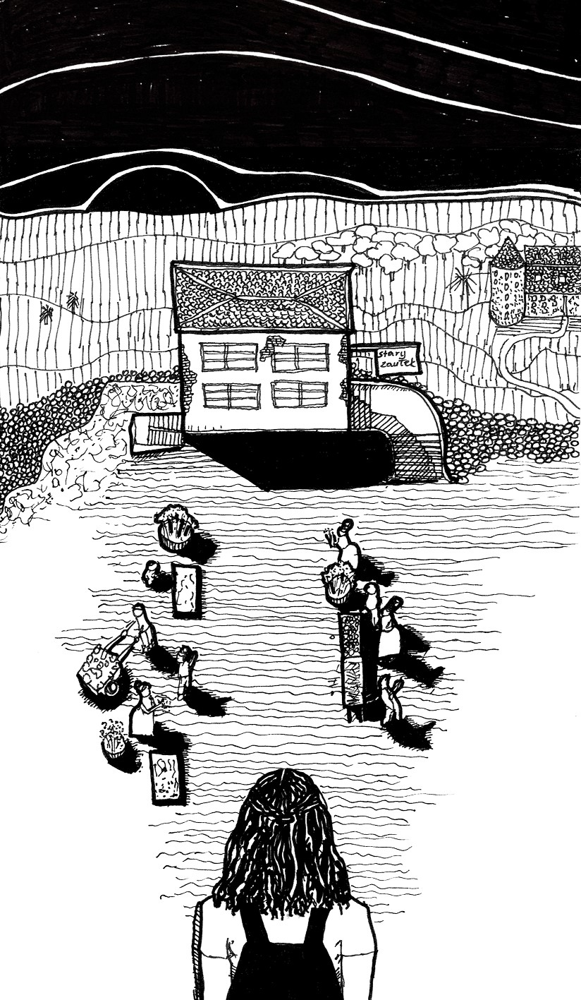
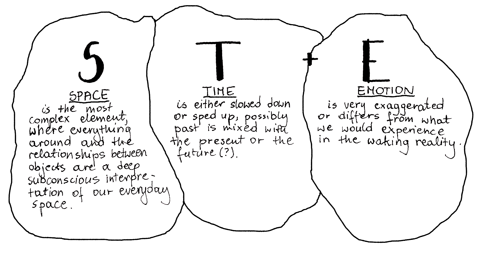

Dreamed Cities as Neurodivergent Cities
From the editors
Oliwia Jackowska
What does the notion of DREAMED SPACES strike you as? Maybe you think liveability, large green spaces and walkable cities... or, maybe like me, you see them as personal interpretations of places around us which show themselves as visions while we sleep. These live between the deepest subconscious layers of our minds. What do they mean? Why should we watch them a bit closer?

Impression of a dream.
At some point in life, I am sure, most people try to seek the meaning of their dreams. It could be when going through puberty, as an attempt to understand own desires, or maybe a bit later on, fascination with dreams becomes a way to cope with anxiety triggered by a burnout or heartbreak. In attempts to interpret these often entangled and seemingly nonsensical imaginative worlds, we search for symbolisms. And even though we lose interest eventually, as it might seem to be just an empty fascination leading nowhere, the scholars have been trying to understand dreams for centuries and use them in psychological diagnosis and therapy. The key figure in dream studies was Carl Jung, who, nowadays, however much criticised for his approach, saw dreams as psyche’s attempt to communicate crucial things to the individual. He explored the idea of the collective unconscious, being a set of “default” mental concepts that are at the base of society and include instincts and archetypes that are inherent to being a human. With these two notions considered, by and large, Jung was interested in using his patients' dreams to map out the relationship of their psyche to this wider context of the collective unconscious, hence understanding what is an individual's position to or within that universe of societal ideas.
This fascinating theme keeps circling back to myself as well, despite me being no expert in psychology. The idea of one’s psyche standing, for example, in contrast to what is generally considered as the instinctive default, shows that everyone’s relation to the world around them, as they see and experience it in the waking reality, is extremely personal and it manifests in its true form through their dreams. These dreams always occur in some kind of time, space and emotional state, and, however much abstracted the image is, our minds draw inspiration from the reality. In relation to that, an interesting concept was described by scholar Athanasios Totlis for North American Journal of Medical Sciences. Developed as Spatio-Temporal and Emotional (ST+E) dream theory. It analyses and defines the relation in all the three listed aspects between dream representations and the waking reality: Space, Time and Emotion. On a side note: sounds familiar to tools used for site analysis in design projects, right? Interestingly, in architectural or urban spatio-temporal analysis there is no inclusion of the aspect of emotion, while it proves over and over to be one of the most important elements of building an individual’s relationship to a place. Now, we can say that in dreams, generally, it happens that (as seen in the graph with three theoretical elements):

Let's focus on the aspect of space, which without a doubt is the most complex component. By paying closer attention to our psyche, which is by far better informed than our conscious way of thinking, we can learn about our real desires, needs and, most importantly, the relationship to the spaces around us in the waking reality. Now, let me take you through my own personal experience with dreams as there is no other way to showcase this theory rather than being very specific... So here on consider yourself welcome to see a sector of my own psyche.
In everyday life, I get lost easily and lose track of the space around me, unless it is a route deeply engraved in my day to day routine (even this requires high alert attention). You will always find me walking through places with my eyes pinned to the maps on my phone screen, and following closely the dot with the little direction arrow, as more often than not I am not able to position myself. This shop here is on the other side, but which side of that shop am I supposed to turn by and… what is the name of the street? Not sure how to say it else, but really, it is a problem, and has always been, however much I tried to concentrate and just do better. Even, or rather should I say - especially, my hometown, in which I grew up in and visit often, cannot be navigated without that wonder of digital live mapping. But what might surprise you, this off-track condition disappears, and I am never disoriented about my whereabouts when they are placed within my dreams. Truly, as if "Inception" was real, I am, in concrete detail, understanding and have unconscious control over the spaces around me, which often have very specific features, placed in cities that make sense.
Though, even when I am dreaming about my hometown, the places in it seem familiar but they are in completely different configurations - their relationships to each other are redefined and shuffled to match my own psyche. My brain re-designs the city so that when I am in control, it is custom-made just for me and... it works. Suddenly I don't get lost, I know where to go, even though in dreams the purpose of the trip might not be so clear. You can say that dreamed cities are neurodivergent cities, where the importance and meaning of places (or rather the associated Emotions) are the uttermost quality, while the form or function does not matter almost at all.
In one such dream, I was moving through my hometown, but the most important street of the old town was wider and longer than normally and was leading through shops and gathered street vendors, who with their clothing seemed to be taken out of the Positivism era. I moved towards a hill, which in reality is a smooth and rather small incline, but here the hill was beautiful, and I could see the landscape and the sunset behind a house positioned at the highest point. The house was my destination in this dream, which in the waking reality is an obscure building hidden away, but one that has been, since forever, a meeting spot for me and my best friends.
In a different dream, I was walking through a city, the city that is actually located on Mars, but with its long streets of repetitive houses it was reminiscent of my university town of Bath in England. Though, the red ground of the other-worldly planet made it seem as if a town straight from a western movie, just as did the murky and dark interiors of the pubs occupied by cowboys and countless jars filled with unidentified contents. Easy to say: I did not enjoy my time in England. But what is even more important about these short stories is that when the image of the city is filtered only through our own imagination in a way completely devoid of conscious bias, it changes the way we read the space. The places of importance are connected in a peculiar way to each other in dreams, and hence they are not geographic anymore, but spiritual or mental interpretations. This way we can ask, what are the limitations of this? If we pay attention to the our dreams and those of others, can we understand not only our own relationship to Jung's collective unconscious, but also the way we rationally understand cities and spaces? Have we been doing it wrong this whole time? Does everyone have their own interpretation of the space, or do they overlap somewhere to create familiar archetypes? There are limitations, of course, as much as you can analyse your own dreams overlapping different psyches might prove way too complex with no limits to human subconscious imagination.
Despite this complexity, I believe there is value in linking the dream theory into our analysis of cities and diving deeper into an idea of why some (or maybe most?) people do not seem to fit in. Getting lost just might be a symptom of a bigger problem.
A German filmmaker, Hito Steyerl, in her article "In Free Fall: A Thought Experiment on Vertical Perspective", refers to the present moment as distinguished by a prevailing condition of groundlessness. She argues that due to that lack of stable ground, with nothing under our feet, we are in a constant state of free-falling, without noticing. This comes with a sense of disorientation, since the horizon is no longer a constant linear point of reference. Paradoxically, by falling asleep we enter the state of lightness, and just like with falling, we lose any sense of where our body begins and the world ends. I believe that falling asleep is the true meaning of Steyerl's falling in place. Hence, the value that I have found in my own journey is a gentler view of my spatial disorientation, as I realised that it is not me getting lost in the waking reality's surroundings, but the surroundings losing me.
This article is a thought experiment and it attempts to spark some processes and discussions. Please share your own thoughts or dreams with us, on instargram @bnieuws or via email bnieuws@tudelft.nl.
Return to top ↑